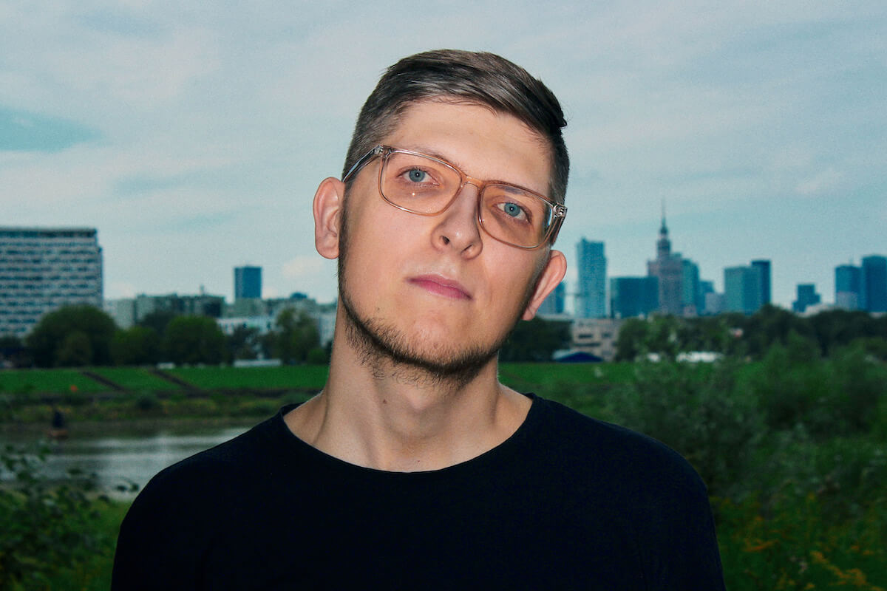

About / O Mnie
Fotograf, obecnie w Warszawie. Poza tym – w całej Polsce i nie tylko.
Od wielu lat zajmuję się dokumentacją wszelkiego rodzaju wydarzeń: rodzinnych, kulturalnych, firmowych, sportowych. Kontakt z fotografią zacząłem od zdjęć ulicznych, kilka lat spędziłem zajmując się fotografią prasową i reportażową. Te doświadczenia pozwoliły mi rozpocząć pracę na własną rękę z przekonaniem, że robię dobrze to, za co się zabieram.
Ostatnimi czasy główne obszary mojej działalności to fotografia ślubna, eventowa i portretowa, ale jestem otwarty na wszelkie wyzwania.
Uwieczniam ludzi, zwierzęta, przestrzenie i przedmioty.
Przykładowe realizacje możesz zobaczyć w zakładkach umieszczonych po lewej stronie.
Tworzone na co dzień obrazki pokazuję na
instagramie (link).
Dostępny pod adresem: jac.smoter@gmail.com i pod numerem telefonu 603633655